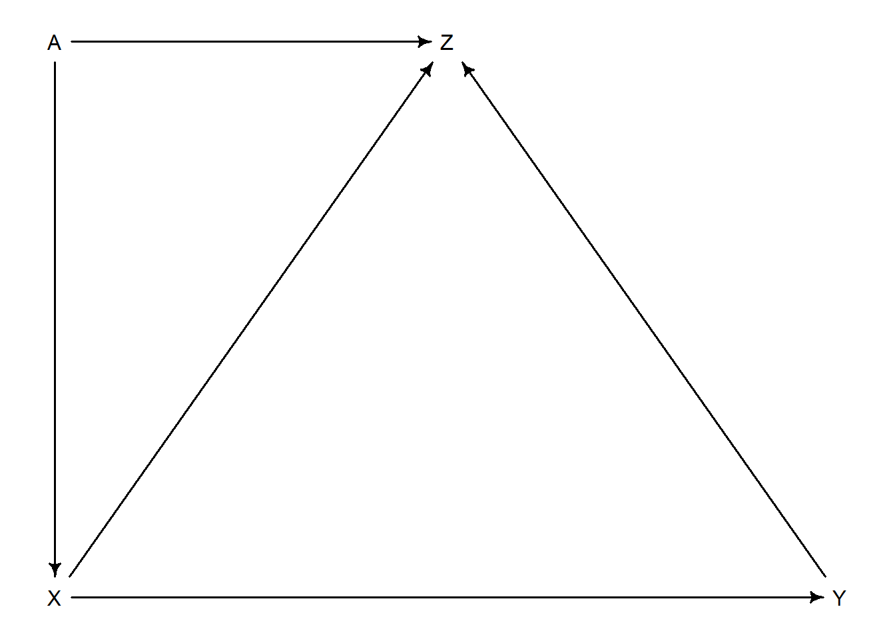

Code
library(rethinking)
library(dagitty)library(rethinking)
library(dagitty)Generate an example of collider bias. Here we use the newsworthiness and trustworthiness example:
N <- 200
p <- 0.1
nw <- rnorm(N); tw <- rnorm(N)
# select the top ten 10%
s <- nw + tw
q <- quantile(s, 1-p)
selected <- s >= q
cor(tw[selected], nw[selected])[1] -0.8268686Let’s simulate a height dataset, we will then simulate leg length for the right and left leg.
set.seed(909)
N <- 100
height <- rnorm(N, 10,2)
leg_prop <- runif(N,0.4,0.5)
leg_left <- leg_prop*height + rnorm(N,0,0.02)
leg_right <- leg_prop*height + rnorm(N,0,0.02)
d <- data.frame(height, leg_left, leg_right)If we regress leg height onto height. We expect the coefficient for leg height to be around 2.2, since the average leg height is 4.5 at the avearge height of 10 (10/4.5).
m6.1 <- quap(alist(
height ~ dnorm(mu, sigma),
mu <- a + bl*leg_left + br*leg_right,
a ~ dnorm(10,100),
bl ~ dnorm(2,10),
br ~ dnorm(2,10),
sigma ~ dexp(1)
), data=d)
precis(m6.1) mean sd 5.5% 94.5%
a 0.9812791 0.28395540 0.5274635 1.4350947
bl 0.2118585 2.52703706 -3.8268348 4.2505518
br 1.7836774 2.53125061 -2.2617500 5.8291047
sigma 0.6171026 0.04343427 0.5476862 0.6865189vcov(m6.1) |> cov2cor() a bl br sigma
a 1.0000000000 0.060242427 -0.083745291 0.0003969113
bl 0.0602424274 1.000000000 -0.999708531 0.0054813380
br -0.0837452911 -0.999708531 1.000000000 -0.0054811932
sigma 0.0003969113 0.005481338 -0.005481193 1.0000000000plot(precis(m6.1))
The question we are asking of the model is: “What is the value of knowing each leg’s length, after already knowing the other leg’s length”.
par(mfrow=c(1,2))
post <- extract.samples(m6.1)
plot(bl ~ br, post, col=col.alpha(rangi2, 0.1), pch=16)
sum_blr <- post$bl + post$br
dens(sum_blr, col=rangi2, lwd=2, xlab='sum of bl and br')A model with only one of the predictors will produce a coefficient that is inline with the sum of the \(\beta_l\) and \(\beta_r\)
m6.2 <- quap(alist(
height ~ dnorm(mu, sigma),
mu <- a + bl*leg_left,
a ~ dnorm(10,100),
bl ~ dnorm(2,10),
sigma ~ dexp(1)
), data=d)
precis(m6.2) mean sd 5.5% 94.5%
a 0.9979326 0.28364620 0.5446112 1.451254
bl 1.9920676 0.06115704 1.8943269 2.089808
sigma 0.6186038 0.04353998 0.5490185 0.688189Take home message: When two predictor variables are very strongly correlated (conditional on other variables in the model), including both in a model may lead to confusion.
Let’s return to the primate milk example:
data(milk)
d <- milk
d$K <- standardize(d$kcal.per.g)
d$fat <- standardize(d$perc.fat)
d$L <- standardize(d$perc.lactose)Let’s start with two bivariate regressions
m6.3 <- quap(alist(
K ~ dnorm(mu, sigma),
mu <- a + bF*fat,
a ~ dnorm(0,0.2),
bF ~ dnorm(0,0.5),
sigma ~ dexp(1)
), data=d)
m6.4 <- quap(alist(
K ~ dnorm(mu, sigma),
mu <- a + bL*L,
a ~ dnorm(0,0.2),
bL ~ dnorm(0,0.5),
sigma ~ dexp(1)
), data=d)
precis(m6.3); precis(m6.4) mean sd 5.5% 94.5%
a 1.535526e-07 0.07725195 -0.1234634 0.1234637
bF 8.618970e-01 0.08426088 0.7272318 0.9965621
sigma 4.510179e-01 0.05870756 0.3571919 0.5448440 mean sd 5.5% 94.5%
a 7.438895e-07 0.06661633 -0.1064650 0.1064665
bL -9.024550e-01 0.07132848 -1.0164517 -0.7884583
sigma 3.804653e-01 0.04958259 0.3012227 0.4597078We might think that both are good predictors, but watch what happens when we put both variables into the model:
m6.5 <- quap(alist(
K ~ dnorm(mu, sigma),
mu <- a + bL*L + bF*fat,
a ~ dnorm(0,0.2),
bL ~ dnorm(0,0.5),
bF ~ dnorm(0,0.5),
sigma ~ dexp(1)
), data=d)
precis(m6.5) mean sd 5.5% 94.5%
a -4.429949e-07 0.06603529 -0.10553759 0.1055367
bL -6.780787e-01 0.18377563 -0.97178761 -0.3843697
bF 2.435019e-01 0.18357757 -0.04989054 0.5368943
sigma 3.767387e-01 0.04918293 0.29813489 0.4553426plot(coeftab(m6.3, m6.4, m6.5), pars=c('bF', 'bL'))
It is the same problem as the previous leg length example: the two variables form essential a single axis of variation.
pairs(~ kcal.per.g + perc.fat + perc.lactose, data=d,col=rangi2,pch=16)
Both variables are good predictors on their own, but neither are good predictors if you already know the other. Richie argues that this is because there is a latent variable \(D\) that influences both lactose and fat. We are no working with a class of fitting problems known as non-identifiability.
Let’s simulate some multicollinearity. We are going to create a new column \(x\) that is created from \(F\) with a correlation parameter.
sim.coll <- function(r=0.9){
d$x <- rnorm(nrow(d), mean=r*d$perc.fat, sd=sqrt((1-r^2)*var(d$perc.fat)))
m <- lm(kcal.per.g ~ perc.fat + x, data=d)
sqrt(diag(vcov(m)))[2] #std dev of x
}
rep.sim.coll <- function(r=0.9, n=100){
stddev <- replicate(n, sim.coll(r))
mean(stddev)
}
r.seq <- seq(0,0.99,0.01)
stddev <- vapply(r.seq, rep.sim.coll, n=100, numeric(1))
plot(r.seq, stddev, type='l', col=rangi2, lwd=2, xlab='correlation')
Let’s say that we have two soils that we are testing. The goal is for one soil to reduce the growth of fungus (which inhibits plant growth). There are four data points collected: pre plant height, post plant height, treated, and fungus growth. If we were to include fungus growth into the model it would ruin the experiment. Here is a simulation:
set.seed(71)
N <- 100
h0 <- rnorm(N,10,2)
treatment <- rep(0:1, each=N/2)
fungus <- rbinom(N, size=1, prob=0.5 - treatment*0.4)
h1 <- h0 + rnorm(N, 5 - 3*fungus)
d <- data.frame(h0,h1,treatment, fungus)
precis(d) mean sd 5.5% 94.5% histogram
h0 9.95978 2.1011623 6.570328 13.07874 ▁▂▂▂▇▃▂▃▁▁▁▁
h1 14.39920 2.6880870 10.618002 17.93369 ▁▁▃▇▇▇▁▁
treatment 0.50000 0.5025189 0.000000 1.00000 ▇▁▁▁▁▁▁▁▁▇
fungus 0.23000 0.4229526 0.000000 1.00000 ▇▁▁▁▁▁▁▁▁▂Let’s define \(p=h_{1,i}/h_{0,i}\), the height at time \(t=1\) over the height at time \(t=0\). We do this since we expect the plant to be taller, but we will let \(p\) be less than one just in case things to horribly wrong. We’ll use the log-normal to enforce this.
m6.6 <- quap(alist(
h1 ~ dnorm(mu, sigma),
mu <- h0*p,
p ~ dlnorm(0,0.25),
sigma ~ dexp(1)
), data=d)
precis(m6.6) mean sd 5.5% 94.5%
p 1.426628 0.01759834 1.398503 1.454754
sigma 1.792106 0.12496794 1.592383 1.991829An average about a 40% growth rate. Now, let’s include both fungus and treatment into the model:
m6.7 <- quap(alist(
h1 ~ dnorm(mu, sigma),
mu <- h0*p,
p <- a + bt*treatment + bf*fungus,
a ~ dlnorm(0,0.2),
bt ~ dnorm(0,0.5),
bf ~ dnorm(0,0.5),
sigma ~ dexp(1)
), data=d)
precis(m6.7) mean sd 5.5% 94.5%
a 1.48139094 0.02451068 1.44221815 1.52056373
bt 0.00241255 0.02986963 -0.04532488 0.05014998
bf -0.26671805 0.03654770 -0.32512833 -0.20830777
sigma 1.40879638 0.09862052 1.25118174 1.56641102The heck? Treatment is zero? Yes, because we are effectively asking the question: “once we already know whether or not a plant developed fungus, does soil treatment matter?”. The answer of course is no.
Let’s build it again, but without fungus:
m6.8 <- quap(alist(
h1 ~ dnorm(mu, sigma),
mu <- h0*p,
p <- a + bt*treatment,
a ~ dlnorm(0,0.2),
bt ~ dnorm(0,0.5),
sigma ~ dexp(1)
), data=d)
precis(m6.8) mean sd 5.5% 94.5%
a 1.38035157 0.02517700 1.34011386 1.4205893
bt 0.08499494 0.03429912 0.03017831 0.1398116
sigma 1.74641704 0.12193300 1.55154456 1.9412895Model m6.7 is still important though. It tells us that including fungus in the model effectively zeros out the treatment, suggesting that the treatment worked for the anticipated reasons. Let’s look at the DAG:
plant_dag <- dagitty('dag{H_0 -> H_1; F -> H_1; T -> F}')
coordinates(plant_dag) <- list(x=c(H_0 = 0, T=2, F=1.5, H_1=1),
y=c(H_0=0, T=0, F=0, H_1=0))
drawdag(plant_dag)
The correct way of phrasing what happened is: “conditioning on F induces D-Separation”. Let’s look at all the conditional independences:
impliedConditionalIndependencies(plant_dag)F _||_ H_0
H_0 _||_ T
H_1 _||_ T | FNotice that the first two don’t have any conditions because they are independent without any conditionals (colliders).
Let’s try a different experiment, where instead of fungus influencing plant growth, it is actually an unobserved variable \(M\) moisture. The treatment is also independent of \(H_1\). \(M\) influences both \(F\) and \(H_1\). Notice, if we condition on fungus we open up the path and \(T\) can now influence \(H_1\), even though \(T\) is indep. of \(H_1\) without any conditionals.
N <- 100
h0 <- rnorm(N,10,2)
treatment <- rep(0:1,each=N/2)
M <- rbern(N)
fungus <- rbinom(N, size=1, prob=0.5 - treatment*0.4 + 0.4*M)
h1 <- h0 + rnorm(N, 5 + 3*M)
d2 <- data.frame(h0, h1, treatment, fungus)
m6.7.1 <- quap(alist(
h1 ~ dnorm(mu, sigma),
mu <- h0*p,
p <- a + bt*treatment + bf*fungus,
a ~ dlnorm(0,0.2),
bt ~ dnorm(0,0.5),
bf ~ dnorm(0,0.5),
sigma ~ dexp(1)
), data=d2)
precis(m6.7.1) mean sd 5.5% 94.5%
a 1.50672922 0.04069269 1.44169444 1.57176400
bt 0.02008198 0.04363655 -0.04965765 0.08982162
bf 0.18732017 0.04363413 0.11758441 0.25705593
sigma 2.15435876 0.15004698 1.91455470 2.39416282m6.8.1 <- quap(alist(
h1 ~ dnorm(mu, sigma),
mu <- h0*p,
p <- a + bt*treatment,
a ~ dlnorm(0,0.2),
bt ~ dnorm(0,0.5),
sigma ~ dexp(1)
), data=d2)
precis(m6.8.1) mean sd 5.5% 94.5%
a 1.62227861 0.03263743 1.5701177 1.67443952
bt -0.02998446 0.04523376 -0.1022767 0.04230782
sigma 2.32259770 0.16155566 2.0644005 2.58079484A variable is a collider if there are arrows going into it.
Let’s simulate happiness and age. These variables are not associated with each other, but they both influence marriage.
# I'm not sure why we need to simulate it for 1,000 years
# It looks like for N_years >= 65 it will always return 65*20 =1,300 rows
# Which makes sense, but why run it for so long if the return is just a snapshot of the current population
# After 1,000 years (i.e. no history)
d <- sim_happiness(seed=1977, N_years = 1e3)
precis(d) mean sd 5.5% 94.5% histogram
age 3.300000e+01 18.768883 4.000000 62.000000 ▇▇▇▇▇▇▇▇▇▇▇▇▇
married 3.007692e-01 0.458769 0.000000 1.000000 ▇▁▁▁▁▁▁▁▁▃
happiness -1.000070e-16 1.214421 -1.789474 1.789474 ▇▅▇▅▅▇▅▇Let’s build a simple regression model to determine the effect of age on happiness while controlling for marriage status. We’ll also only focus on adults here. We’re going to build our prior model such that happiness is at its peak at age 18 and lowest at age 65. Variable \(A\) will encode this by ranging from 1 to 0.
d2 <- d[d$age > 17,]
d2$A <- (d2$age - 18)/(65-18)
d2$mid <- d2$married + 1Since happiness ranges from -2 to 2, the strongest association for age would be a coef. of 4 since that would take us from the min to max (if that was true the intercept would probably be -2 to make it all work out).
m6.9 <- quap(alist(
happiness ~ dnorm(mu, sigma),
mu <- a[mid] + bA*A,
a[mid] ~ dnorm(0,1),
bA ~ dnorm(0,2),
sigma ~ dexp(1)
), data=d2)
precis(m6.9, depth=2) mean sd 5.5% 94.5%
a[1] -0.2350877 0.06348986 -0.3365568 -0.1336186
a[2] 1.2585517 0.08495989 1.1227694 1.3943340
bA -0.7490274 0.11320112 -0.9299447 -0.5681102
sigma 0.9897080 0.02255800 0.9536559 1.0257600Strong relationship between age and happiness. Let’s see what happens when we remove marriage:
m6.10 <- quap(alist(
happiness ~ dnorm(mu, sigma),
mu <- a + bA*A,
a ~ dnorm(0,1),
bA ~ dnorm(0,2),
sigma ~ dexp(1)
), data=d2)
precis(m6.10) mean sd 5.5% 94.5%
a 1.649248e-07 0.07675015 -0.1226614 0.1226617
bA -2.728620e-07 0.13225976 -0.2113769 0.2113764
sigma 1.213188e+00 0.02766080 1.1689803 1.2573949Woah! No association found, marriage is a collider!
Grandparent, Parent, Child example:
If we add the unobserved U, it will bias inference from \(G \rightarrow C\). This is becuase if we condition on \(P\) and regress \(G\) on \(C\), then we don’t only get \(G\rightarrow C\), but we also now get \(G\rightarrow P \leftarrow U \rightarrow C\), because \(P\) now becomes a collider.
Let’s do some simulations to prove this:
N <- 200
b_GP <- 1 # direct effect of G on P
b_GC <- 0 # direct effect of G on C
b_PC <- 1 # direct effect of P on C
b_U <- 2 # direct effect of U on P and C
set.seed(1)
U <- 2*rbern(N,0.5) - 1
G <- rnorm(N)
P <- rnorm(N, b_GP*G + b_U*U)
C <- rnorm(N, b_PC*P + b_GC*G + b_U*U)
d <- data.frame(C,P,G,U)
m6.11 <- quap(alist(
C ~ dnorm(mu, sigma),
mu <- a + b_PC*P + b_GC*G,
a ~ dnorm(0,1),
c(b_PC, b_GC) ~ dnorm(0,1),
sigma ~ dexp(1)
), data=d)
precis(m6.11) mean sd 5.5% 94.5%
a -0.1174752 0.09919574 -0.2760091 0.04105877
b_PC 1.7868915 0.04455355 1.7156863 1.85809664
b_GC -0.8389537 0.10614045 -1.0085867 -0.66932077
sigma 1.4094891 0.07011139 1.2974375 1.52154063Two things going on here. We have simple confounding for \(\beta_{PC}\) because it is not measuring the direct effect. We also have the confounding effect of \(U\), causing \(\beta_{PC}\) to be higher than expected. Second, we have the collider effect causing \(\beta_{GC}\) to have a significant magnitude, when it should be zero.
This is pretty cool when you think about it, that is, why are we seeing \(\beta_{PC}\) as negative. Well, we know that a bad neighborhood (\(U=-1\)) hurts child and parent education. But, lets say that we condition on parent education. That is, we have some sub-population of kids \(s\) that have parents with the same education level. Now, what happens when we look at grandparent education. There will be some that are high and some that are low. But, we have conditioned on parent education, therefore the changes in grandparent education can’t effect parent education. What can? Neighborhood status. This is how we get differing grandparent education, with the same parent education - neighborhood status controls this. Thus, if we have grandparent \(G_1\) with a high education and grandparent \(G_2\) with a low education, chances are \(P_1\) is in a bad neighborhood and \(P_2\) is in a good neighborhood to keep \(P_1 = P_2\). Thus, \(C_1\) will be lower and \(C_2\) will be higher. A negative correlation.
Let’s now add U into the model for completeness.
m6.12 <- quap(alist(
C ~ dnorm(mu, sigma),
mu <- a + b_PC*P + b_GC*G + b_U*U,
a ~ dnorm(0,1),
c(b_PC, b_GC, b_U) ~ dnorm(0,1),
sigma ~ dexp(1)
), data=d)
precis(m6.12) mean sd 5.5% 94.5%
a -0.12197510 0.07192588 -0.2369265 -0.007023655
b_PC 1.01161103 0.06597258 0.9061741 1.117047948
b_GC -0.04081373 0.09728716 -0.1962974 0.114669941
b_U 1.99648992 0.14770462 1.7604294 2.232550439
sigma 1.01959911 0.05080176 0.9384081 1.100790130confounding: any context in which the association between an outcome \(Y\) and predictor \(X\) is not the same as it would be, if we had experimentally determined the values of \(X\).
There are four types of elemental relations:
So Richie has said that we should only close backdoor paths. That is, we want to remove any effects from paths that don’t have \(X\) influencing \(Y\). This would also mean that Richie doesn’t want use to condition on \(Z\), if \(Z\) is a mediator (pipe), as this would remove the mediation effect of \(X\) onto \(Z\), and then \(Z\) onto \(Y\). I get this, but it can be hard to wrap your head around first. Basically, what Richie is saying here is that any arrows that point from \(X\) to \(Y\) should be kept in, because that in effect is \(X\)’s total effect on \(Y\).
Let’s try an example:
dag_6.1 <- dagitty("dag{
U [unobserved]
X -> Y
X <- U <- A -> C -> Y
U -> B <- C
}")
adjustmentSets(dag_6.1, exposure = 'X', outcome='Y'){ C }
{ A }Thus, to block the backdoor path, conditioning on either \(A\) or \(C\) will suffice. Notice that we don’t conidtion on \(B\). That is because the backdoor path that contains \(B\) has a collider and is therefore already closed. We wouldn’t want any spurious association in our effect estimate.
Let’s go to a beefy waffle house/divorce rate example:
dag_6.2 <- dagitty("dag{
A -> D
A -> M -> D
A <- S -> M
S -> W -> D
}")
adjustmentSets(dag_6.2, exposure = 'W', outcome='D'){ A, M }
{ S }impliedConditionalIndependencies(dag_6.2 )A _||_ W | S
D _||_ S | A, M, W
M _||_ W | SRecall the DAG on pg 186:
dag_m1.1 <- dagitty("dag{
U [unobserved]
A -> C -> Y
A -> U -> B <- C
U -> X -> Y
}")
coordinates(dag_m1.1) <- list(x=c('A'=0.5, 'B'=0.5, 'C'=1, 'U'=0, 'X'=0, 'Y'=1),
y=c('A'=-1.5, 'B'=-0.5, 'C'=-1, 'U'=-1, 'X'=0, 'Y'=0))
drawdag(dag_m1.1)
Now add a new unobserved variable \(V\) that makes the path \(C \leftarrow V \rightarrow Y\):
dag_m1.2 <- dagitty("dag{
U [unobserved]
V [unobserved]
A -> C -> Y
A -> U -> B <- C
U -> X -> Y
C <- V -> Y
}")
coordinates(dag_m1.2) <- list(x=c('A'=0.5, 'B'=0.5, 'C'=1, 'U'=0, 'X'=0, 'Y'=1, V=1.5),
y=c('A'=-1.5, 'B'=-0.5, 'C'=-1, 'U'=-1, 'X'=0, 'Y'=0, V=-0.5))
drawdag(dag_m1.2)These are the new following paths from \(X\) to \(Y\), we only need to close the first path:
The following are the sets that we could condition on (we can’t observe \(U\) or \(V\)):
Let’s go ahead and check and see what has changed
adjustmentSets(dag_m1.1, exposure='X', outcome = 'Y'){ C }
{ A }adjustmentSets(dag_m1.2, exposure='X', outcome = 'Y'){ A }Need to be careful about just looking at the pair plots. We care about the conditional association, not the association before the variables are put into the model. Let’s look at an example with the following DAG \(X \rightarrow Z \rightarrow Y\)
n <- 100
X <- rnorm(n)
Z <- rnorm(n,X, 0.5)
Y <- rnorm(n,Z,0.8)
data <- cbind(X,Z,Y) |> as.data.frame()
cor(data) X Z Y
X 1.0000000 0.8808459 0.6650703
Z 0.8808459 1.0000000 0.7538825
Y 0.6650703 0.7538825 1.0000000pairs(data, pch=16, col=rangi2)We clearly have correlation between the predictors, but not necessarily multicollinearity. Let’s see what happens when we build the model:
m2.3 <- quap(alist(
Y ~ dnorm(mu, sigma),
mu <- a + bZ*Z + bX*X,
a ~ dnorm(0,2),
bZ ~ dnorm(0,2),
bX ~ dnorm(0,2),
sigma ~ dexp(1)
), data=data)
m2.2 <- quap(alist(
Y ~ dnorm(mu, sigma),
mu <- a + bZ*Z,
a ~ dnorm(0,2),
bZ ~ dnorm(0,2),
sigma ~ dexp(1)
), data=data)
m2.1 <- quap(alist(
Y ~ dnorm(mu, sigma),
mu <- a + bX*X,
a ~ dnorm(0,2),
bX ~ dnorm(0,2),
sigma ~ dexp(1)
), data=data)
plot(coeftab(m2.1, m2.2, m2.3), pars=c('bZ', 'bX'))Notice that \(\beta_X\) didn’t stay roughly the same but increase in uncertainty, it shrunk to practically zero. While \(\beta_Z\) stayed roughly the same but did become somewhat more uncertain.
In the legs example, both left and right legs have causal arrows from height - they share a common source. In this example, all the variance present predicting \(Y\) with \(X\) is already explained by \(Z\).
dag_m3.1 <- dagitty("dag{
X <- Z <- A
X -> Y <- A
Z -> Y
}")
coordinates(dag_m3.1) <- list(x=c(X=0, Y=1, A=1, Z=0.5),
y=c(X=0, Y=0, A=-1, Z=-1))
drawdag(dag_m3.1)Backdoor paths are:
Need to condition on \(Z\).
adjustmentSets(dag_m3.1, exposure='X', outcome='Y'){ Z }dag_m3.2 <- dagitty("dag{
X -> Z <- A
X -> Y <- A
Z -> Y
}")
coordinates(dag_m3.2) <- list(x=c(X=0, Y=1, A=1, Z=0.5),
y=c(X=0, Y=0, A=-1, Z=-1))
drawdag(dag_m3.2)Don’t condition on anything since we want the total causal effect, not the direct effect.
dag_m3.3 <- dagitty("dag{
X <- A -> Z <- Y
X -> Y
X -> Z
}")
coordinates(dag_m3.3) <- list(x=c(X=0, Y=1, A=0, Z=0.5),
y=c(X=0, Y=0, A=-1, Z=-1))
drawdag(dag_m3.3)
No need to condition since \(Z\) is a collider and blocks the backdoor path
adjustmentSets(dag_m3.3, exposure='X', outcome='Y') {}dag_m3.4 <- dagitty("dag{
X <- A -> Z -> Y
X -> Y
X -> Z
}")
coordinates(dag_m3.4) <- list(x=c(X=0, Y=1, A=0, Z=0.5),
y=c(X=0, Y=0, A=-1, Z=-1))
drawdag(dag_m3.4)Need to condition on only \(A\) since we still want the path that flows from \(X \rightarrow Z \rightarrow Y\).
adjustmentSets(dag_m3.4, exposure='X', outcome='Y'){ A }Here is the following DAG for the fox data:
dag_h4 <- dagitty('dag{
area -> avgfood -> groupsize -> weight
avgfood -> weight
}')
coordinates(dag_h4) <- list(x=c(area=0.5, avgfood=0, groupsize=1, weight=0.5),
y=c(area=-1, avgfood=-0.5, groupsize=-0.5, weight=0))
drawdag(dag_h4)Let’s data a look at the data:
data("foxes")
d <- foxes
pairs(foxes, pch=16, col=rangi2)Let’s build a simple model to infer the total causal effect of area on weight:
d <- foxes
d$A <- d$area |> standardize()
d$W <- d$weight |> standardize()
d$F <- d$avgfood |> standardize()
d$G <- d$groupsize |> standardize()
m_h3 <- quap(alist(
W ~ dnorm(mu, sigma),
mu <- a + bA*A,
a ~ dnorm(0,0.7),
bA ~ dnorm(0,0.8),
sigma ~ dexp(1)
), data=d)
prior <- extract.prior(m_h3, n = 100) |> as.data.frame()
plot(W ~ A, data=d, pch=16, col=rangi2)
for (i in 1:60) abline(a=prior[i,1], b=prior[i,2], col=col.alpha('grey',0.3), lwd=2)Prior looks good after some tinkering, let’s look at the effect:
precis(m_h3) mean sd 5.5% 94.5%
a -3.801390e-07 0.09125120 -0.1458374 0.1458367
bA 1.922088e-02 0.09182493 -0.1275331 0.1659748
sigma 9.912640e-01 0.06466614 0.8879150 1.0946130Not seeing much of a meaningful effect of area on weight.
Let’s look at the effect of avgfood now. I would assume that adding food would increase the weight. There are now covariates given the model that we need to account for to get the total causal effect:
m_h4 <- quap(alist(
W ~ dnorm(mu, sigma),
mu <- a + bF*F,
a ~ dnorm(0,0.7),
bF ~ dnorm(0,0.8),
sigma ~ dexp(1)
), data=d)
precis(m_h4) mean sd 5.5% 94.5%
a 6.010051e-07 0.09124018 -0.1458188 0.1458200
bF -2.470902e-02 0.09181380 -0.1714452 0.1220272
sigma 9.911423e-01 0.06465831 0.8878058 1.0944788Hmm, not much to see here.
For this DAG, we need to account for avgfood since there is an backdoor path \(\text{groupsize} \leftarrow \text{avgfood} \rightarrow \text{weight}\).
m_h5 <- quap(alist(
W ~ dnorm(mu, sigma),
mu <- a + bF*F + bG*G,
a ~ dnorm(0,0.7),
bF ~ dnorm(0,0.8),
bG ~ dnorm(0,1),
sigma ~ dexp(1)
), data=d)
precis(m_h5) mean sd 5.5% 94.5%
a -1.062331e-06 0.08657473 -0.1383642 0.1383621
bF 5.789728e-01 0.19342389 0.2698440 0.8881015
bG -6.777248e-01 0.19383347 -0.9875082 -0.3679415
sigma 9.396527e-01 0.06136589 0.8415781 1.0377272Hey, cool! We found a negative association for \(\beta_{\text{groupsize}}\)! And, it looks like \(\beta_{\text{avgood}}\) has a positive value now. But wait… what’s that lurking in the dark. Could it be multicollinearity?:
post <- extract.samples(m_h5, n=1e4)
plot(bG ~ bF, data=post, col=col.alpha(rangi2))
abline(a=0, b=-1, lwd=2)Yeah, looks like it, or maybe something akin to it. What’s even worse is that effects essentially cancel each other out.
From the DAG and further thinking it looks like area effects both avgfood and groupsize (through avgfood), but avgfood has a positive association with weight, and groupsize a negative. But, since both avgfood and groupsize are highly correlated, as they are influenced by the same ancestral predictor (area), their effect for weight cancels each other out. Another way to think of this is a masked relation.